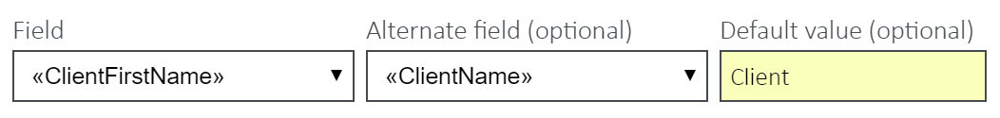
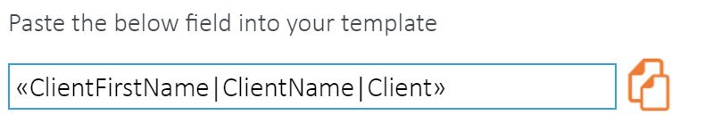
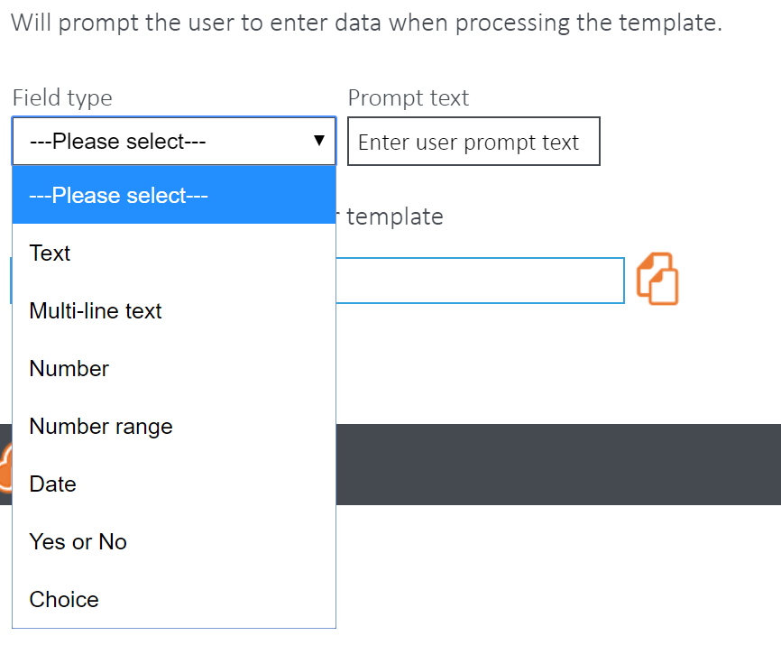
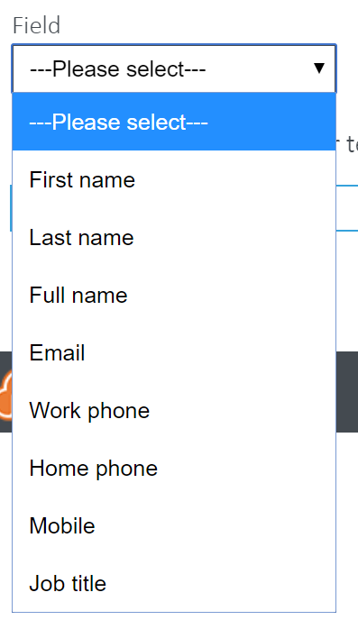

|
<< Click to Display Table of Contents >> Navigation: Templates > Using Template Field Builder |
The following steps show how to create a standard template field.
1.Select the type of field you want to use from the 3 buttons: Client Fields / Job Fields / Custom Fields. This will populate the drop down lists with all the relevant available fields for making templates.
2.Select an option from the ‘Field’ dropdown – this is mandatory and the other fields will not function without this.

3.In case the first field contains no data, you may wish to select an option from the ‘Alternative Field’ dropdown and add default text, if neither have data.
4.The tag will generate automatically in the box beneath the field builder options.

5.Once you are happy, click the Clipboard button to copy the tag. You should then paste it (Ctrl + V) into the word/excel template you are creating.
The following steps show how to create a custom prompt field.
1.Select the Custom user prompt field button to show the relevant controls.
2.Select the Field Type.

3.Enter the text you wish to appear in the prompt and any extra data that may be required according to the field type selected.
4.The tag will generate automatically in the box beneath the field builder options.
5.Once you are happy, click the Clipboard button to copy the tag. You should then paste it (Ctrl + V) into the Word or Excel template you are creating.
The following steps show how to create a custom prompt field.
1. Select the O365 user info field button to show the relevant controls.
2.Select a field from the dropdown.

3.The tag will generate automatically in the box beneath the field dropdown.
4.Click the Clipboard button to copy the tag. You should then paste it (Ctrl + V) into the Word or Excel template you are creating.
You will have to upgrade the security level permissions on Templates to be able to include these fields. If you do not see this feature, follow a simple procedure detailed on our support site here.